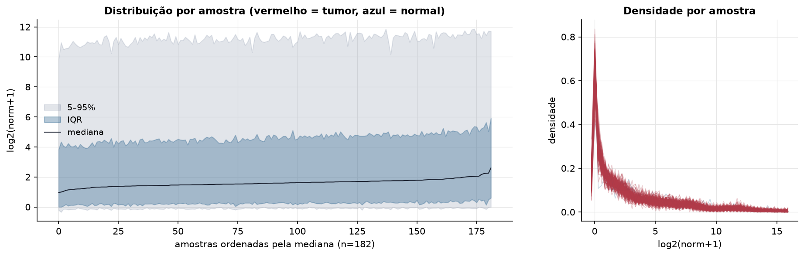
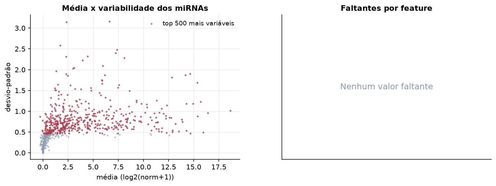
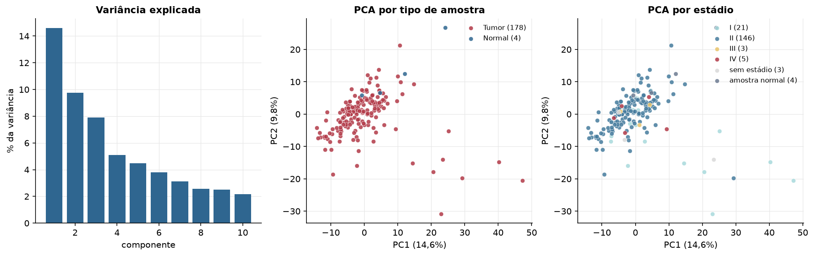
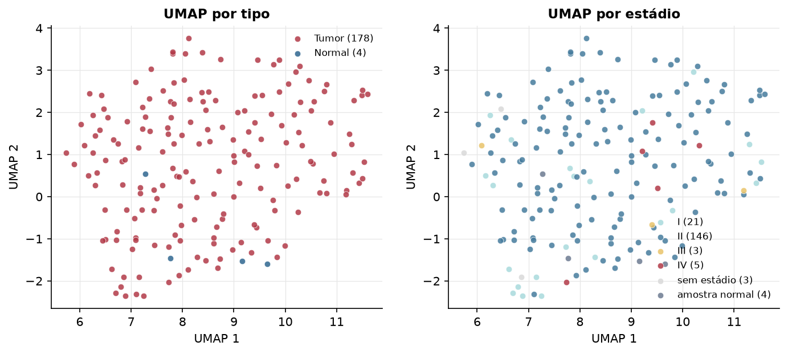
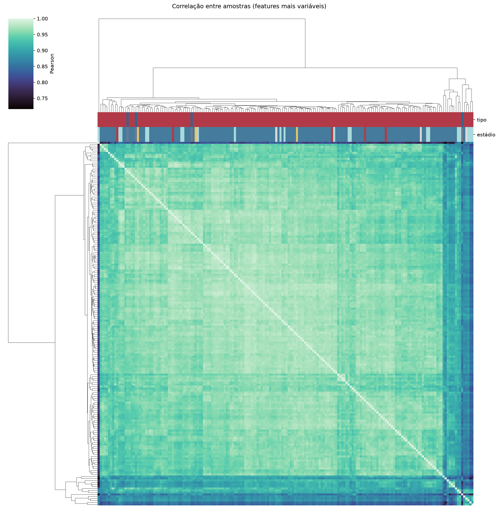
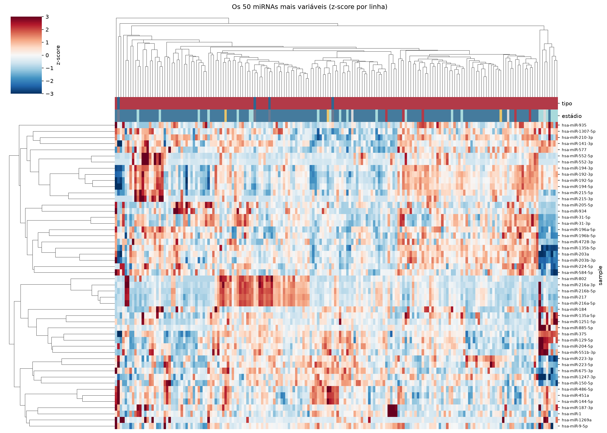
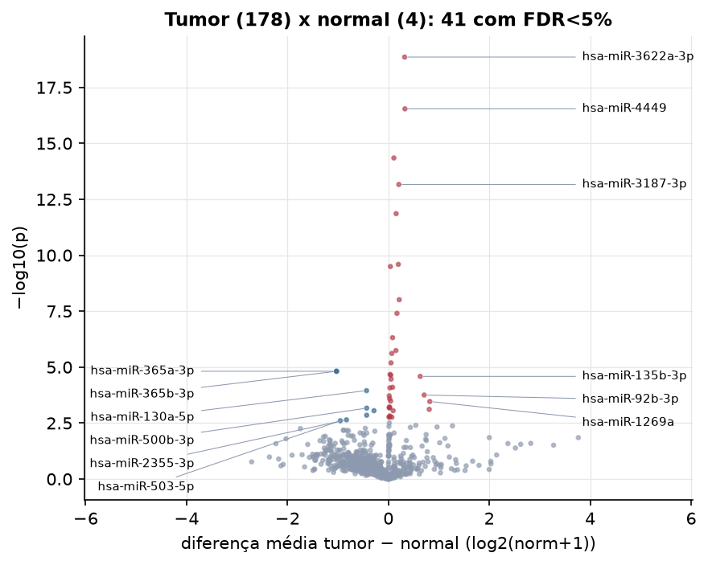
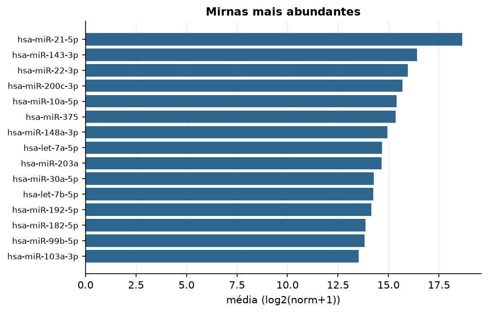

PAAD · miRNA-seq (PanCanAtlas)
miRNA maduro, normalizado e corrigido por lote (EB), log2(x+1) · gerado em 22/10/2026 02:32
743miRNAs
178amostras tumorais
4amostras normais
0,0%valores faltantes
Fonte: PanCanAtlas (pancanMiRs_EBadjOnProtocolPlatformWithoutRepsWithUnCorrectMiRs_08_04_16.xena)
Fita madura (5p/3p) já normalizada. As contagens brutas por precursor estão no relatório de contagens.
Principais resultados
- 743 miRNAs medidos em 182 amostras (178 tumorais e 4 normais); 0,0% dos valores estão faltando.
- Os dois primeiros componentes principais explicam 14,6% e 9,8% da variância das features mais variáveis.
- Correlação mediana entre amostras: 0,96.
- Amostras com correlação muito abaixo das demais (possíveis outliers técnicos): TCGA-HZ-7289-01, TCGA-H6-A45N-11, TCGA-US-A776-01, TCGA-L1-A7W4-01, TCGA-3A-A9IO-01, TCGA-3A-A9IR-01, TCGA-3A-A9IL-01, TCGA-3A-A9IN-01, TCGA-3A-A9IS-01, TCGA-3A-A9IJ-01.
- Tumor x normal: 41 miRNAs diferentes com FDR < 5% (33 maiores no tumor, 8 maiores no normal; 4 pacientes têm o par tumor-normal).
- Mais aumentados no tumor: hsa-miR-3622a-3p, hsa-miR-4449, hsa-miR-548d-3p, hsa-miR-3187-3p, hsa-miR-1295b-5p, hsa-miR-7641, hsa-miR-96-3p, hsa-miR-4652-5p.
- Mais reduzidos no tumor: hsa-miR-365a-3p, hsa-miR-365b-3p, hsa-miR-130a-5p, hsa-miR-500b-3p, hsa-miR-411-5p, hsa-miR-655-3p, hsa-miR-2355-3p, hsa-miR-503-5p.
- Associações clínicas com p < 0,05 nos componentes principais: PC2 com estádio (p=0.048); PC1 com sobrevida (p=9e-05).
Distribuição dos valores


Estrutura das amostras




Tumor x normal

Features mais diferentes entre tumor e normal
| sample | diferenca_tumor_menos_normal | t | p | fdr |
|---|---|---|---|---|
| hsa-miR-3622a-3p | 0.322 | 10.226 | 1.39e-19 | 1.03e-16 |
| hsa-miR-4449 | 0.328 | 9.396 | 2.87e-17 | 1.06e-14 |
| hsa-miR-548d-3p | 0.109 | 8.586 | 4.51e-15 | 1.11e-12 |
| hsa-miR-3187-3p | 0.207 | 8.138 | 6.89e-14 | 1.27e-11 |
| hsa-miR-1295b-5p | 0.154 | 7.631 | 1.38e-12 | 2.04e-10 |
| hsa-miR-7641 | 0.197 | 6.708 | 2.56e-10 | 3.14e-08 |
| hsa-miR-96-3p | 0.04 | 6.668 | 3.19e-10 | 3.36e-08 |
| hsa-miR-4652-5p | 0.216 | 6.022 | 9.73e-09 | 8.96e-07 |
| hsa-miR-1293 | 0.17 | 5.745 | 3.94e-08 | 3.23e-06 |
| hsa-miR-519a-3p | 0.083 | 5.227 | 4.82e-07 | 3.55e-05 |
| hsa-miR-204-3p | 0.15 | 4.938 | 1.82e-06 | 0.000122 |
| hsa-miR-518e-3p | 0.068 | 4.872 | 2.44e-06 | 0.00015 |
| hsa-miR-520d-3p | 0.053 | 4.65 | 6.46e-06 | 0.000366 |
| hsa-miR-365a-3p | -1.028 | -10.631 | 1.53e-05 | 0.000754 |
| hsa-miR-365b-3p | -1.028 | -10.632 | 1.53e-05 | 0.000754 |
| hsa-miR-373-3p | 0.033 | 4.369 | 2.12e-05 | 0.000976 |
| hsa-miR-522-3p | 0.048 | 4.351 | 2.29e-05 | 0.000992 |
| hsa-miR-135b-3p | 0.631 | 9.814 | 2.59e-05 | 0.001 |
| hsa-miR-196b-3p | 0.054 | 4.251 | 3.44e-05 | 0.001 |
| hsa-miR-517-5p | 0.084 | 4.04 | 7.95e-05 | 0.003 |
| hsa-miR-514a-5p | 0.031 | 4.025 | 8.44e-05 | 0.003 |
| hsa-miR-130a-5p | -0.433 | -9.764 | 0.000112 | 0.004 |
| hsa-miR-92b-3p | 0.709 | 5.943 | 0.000176 | 0.006 |
| hsa-miR-513a-5p | 0.017 | 3.81 | 0.000192 | 0.006 |
| hsa-miR-548y | 0.025 | 3.729 | 0.000259 | 0.008 |
| hsa-miR-302b-3p | 0.045 | 3.662 | 0.00033 | 0.009 |
| hsa-miR-1269a | 0.821 | 4.334 | 0.000343 | 0.009 |
| hsa-miR-513b-5p | 0.022 | 3.494 | 0.000602 | 0.016 |
| hsa-miR-519c-3p | 0.017 | 3.474 | 0.000645 | 0.016 |
| hsa-miR-521 | 0.022 | 3.47 | 0.000655 | 0.016 |
Associação com variáveis clínicas
p-valores da associação dos três primeiros componentes principais (só tumores) com estádio (Kruskal-Wallis), sexo (Mann-Whitney), idade (Spearman) e sobrevida global (Cox univariado).
| estádio (Kruskal) | sexo (Mann-Whitney) | idade (Spearman) | sobrevida OS (Cox) | |
|---|---|---|---|---|
| PC1 (14,5%) | 0.092 | 0.344 | 0.644 | 9.01e-05 |
| PC2 (9,4%) | 0.048 | 0.453 | 0.283 | 0.292 |
| PC3 (8,0%) | 0.256 | 0.067 | 0.528 | 0.51 |
Mais abundantes
